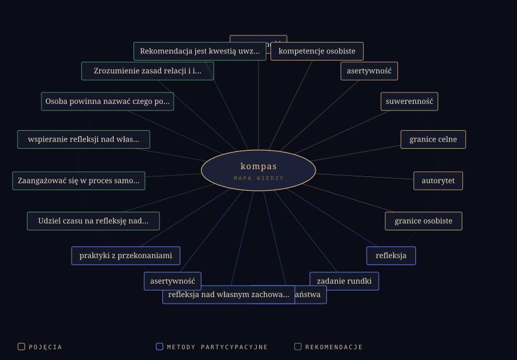

Pracujemy sobą
Plan, techniki i format spotkania są ważne, ale w napięciu grupa najpierw spotyka człowieka, nie metodę.
Skryptorium Głosów · kompas
To nie jest strona o prostym „mów nie”. To mapa sytuacji, w których osoba facylitująca pilnuje siebie, grupy i procesu: od sygnału w ciele, przez cel spotkania, aż po spokojną interwencję.
Główna teza
Plan, techniki i format spotkania są ważne, ale w napięciu grupa najpierw spotyka człowieka, nie metodę.
Napięcie, zacisk szczęk, dyskomfort albo poczucie „nie wypada” mówią, że warto sprawdzić granicę.
Nie służy dominacji. Pomaga nazwać zasadę, uzasadnić ją i chronić proces bez naruszania innych.
Obserwatorium 3D
Kompas poniżej nie jest dekoracją. Każdy punkt odpowiada wątkowi ze skryptu: suwerenności, granicom, zasadom wymiany, autorytetowi, emocjom i przekonaniom. Poruszaj kursorem nad sceną, a układ będzie reagował jak spokojny pulpit pracy.
Aktywny odczyt
Obserwatorium podświetla wątek, który aktualnie pracuje na stronie. Możesz też wybrać węzeł ręcznie.
Stacje kampusu
Zamiast przepisywać transkrypt, rozłożyłem nagranie na stacje decyzyjne. Każda stacja zawiera sens, napięcie z praktyki i pytanie, które można zabrać na warsztat.
Sekcja edukacyjna
Ta część rozwija sensy z transkryptu. Nie streszcza ich w trzech hasłach, tylko prowadzi przez mechanikę: co obserwować, jak diagnozować, kiedy interweniować i jak ćwiczyć własne przekonania.
Symulator granicy
W nagraniu powraca różnica między spokojną decyzją a automatyczną zgodą. Ten panel pomaga nazwać, co właśnie dzieje się w procesie i jaka interwencja będzie proporcjonalna.
Autoskan obszarów
W nagraniu wraca myśl, że asertywność nie jest jednolita: bywamy asertywni w jednych sytuacjach, a w innych nie. Zaznacz, jak jest u Ciebie. To ćwiczenie refleksyjne, nie test — inspirowane obszarami z treningu asertywności (Maria Król-Fijewska).
Konsola interwencji
Poniższe scenariusze są kuratorską wersją wątków ze spotkania: dominacja, podgrupki, potrzeba przerwy, nierówne traktowanie, zmiana planu i praca z autorytetem.
Kreator formułki
Formułka działa, gdy trzyma schemat: obserwacja → potrzeba → propozycja → powrót do pracy. Wpisz swoje elementy, a kreator ułoży zdanie, które chroni proces bez atakowania osoby.
Mapa procesu
Poprzednio ta mapa była listą kart. Teraz działa jak ścieżka decyzyjna: wybierz etap i zobacz, co w nim rozpoznajesz, jaki błąd grozi oraz jaka mikropraktyka prowadzi dalej.
Atlas pojęć
Pojęcia z danych graficznych zostały oczyszczone do wersji użytkowej. Wybór pojęcia pokazuje, jak może działać w realnym spotkaniu.
Warstwa źródłowa
Zachowana grafika SVG pokazuje pierwotny eksport pojęć i metod. Nowy interfejs jest warstwą interpretacji, a nie zastąpieniem źródeł.
